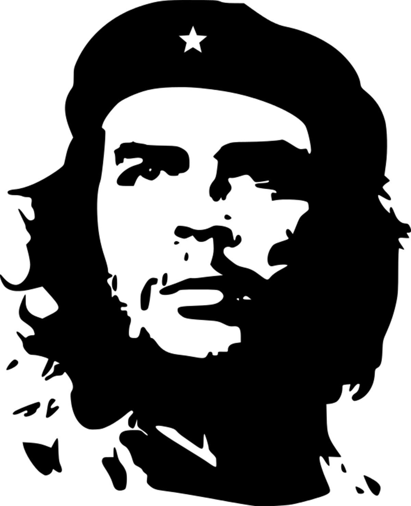
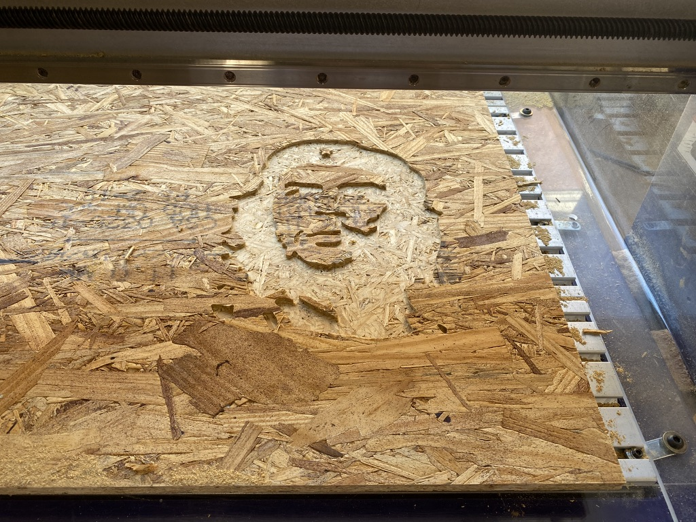
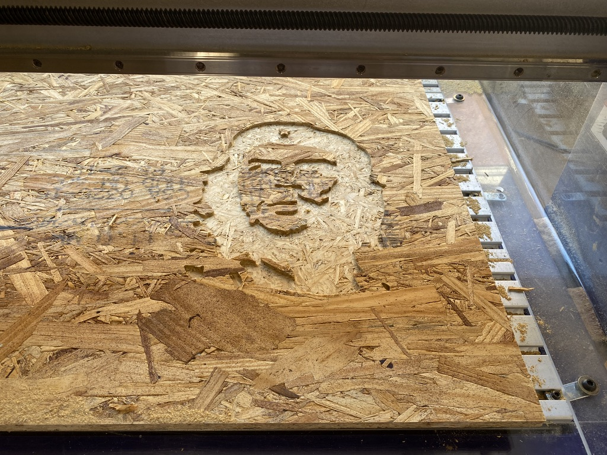
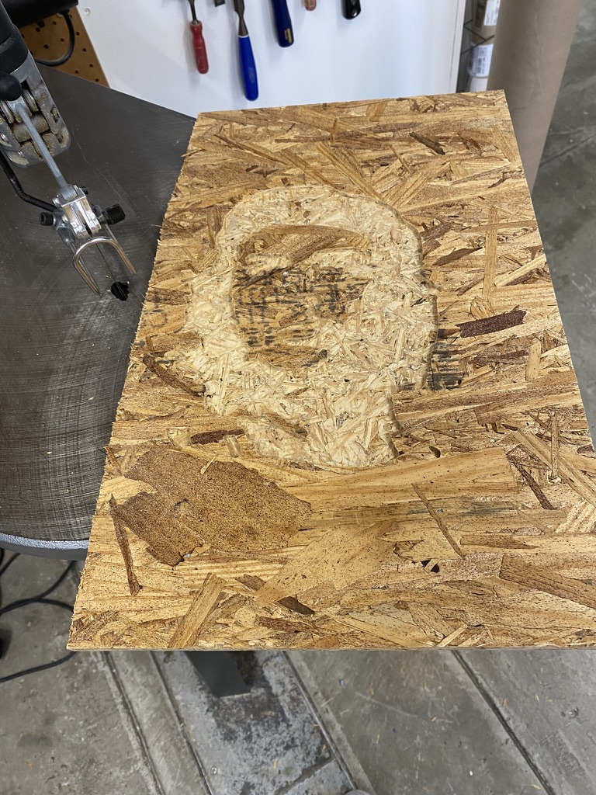
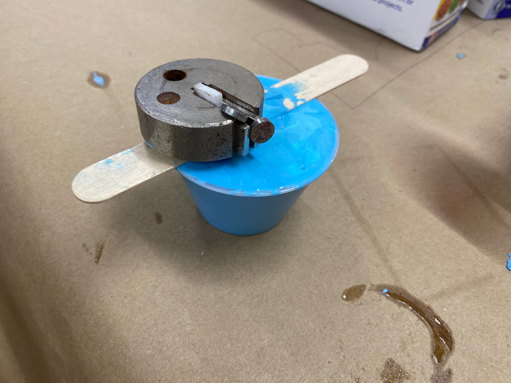

Che Guevara

Materials
- ShopBot
- Black Sharpie
- Scroll Saw
Introduction
I wanted to create a couple of interesting items for this week. I Initially wanted to carve out a picture frame in the wax block, which I could then use to mold and cast, but was not able to do this (ran into some difficulties with the SRM). I pivoted to instead mill Che Guevara, and mold / cast a design I used in the 3D printing week.
The Process
For this project, I started by finding this jpeg of Che online. I figured it would be cool to raster using the ShotBot, and simple enough where I wouldn't run into too many issues.
I then converted the jpeg to a dxf file for use in the Shopbot.
Download my DXF file here!I then turned to importing my dxf file into the Aspire software. From here, I selected what I wanted to raster. In hindsight, I would have also benefitted from a profile cut around Che.
 

I wanted Che to break (somewhat) free from his wooden jail, so I used the scroll saw to take off the excess blank space. The end result was not terrible.
From here, I wanted more contrast between the parts that were black and white in the original image. I was originally going to spray paint, but then figured the coloring in with Sharpie was far easier. The result is at the top of this page.
Materials
- Oomoo
- Patience
- Plaster
Introduction
I wanted to create a couple of interesting items for this week. I initially wanted to create a picture frame, but after difficulty using the SRM, and then 3D printing, I took this as a sign from the universe that it was not meant to be. I opted to instead cast a print I had from the 3D printing week.
The Process
I started by procuring my specimean for molding (see below). Shoutout to Kassia for printing this. I then glued it to a popsicle stick, so that I can place it "upside-down" in a container when molding.
I mixed equal parts Oomoo A and B by volume to get the desired material from which to make the mold. I then poured this over my cat (upside-down). I had to place a weight on top because the cat kept floating up.
